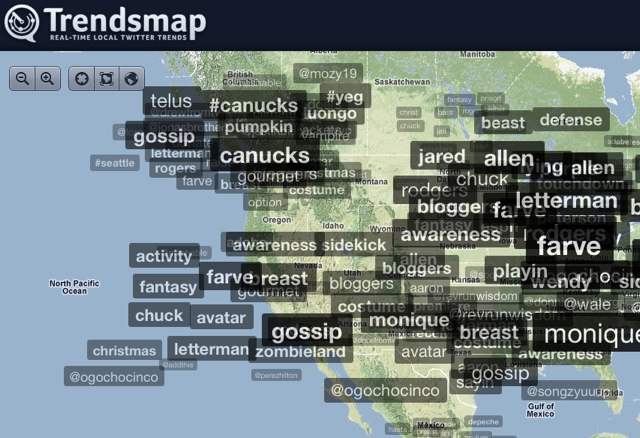
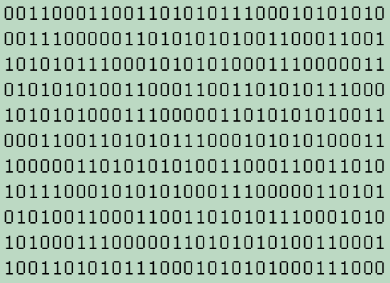
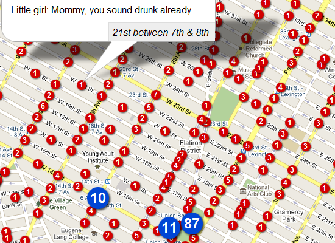

"A mashup or blend (also mash up and mash-up) is a song or composition created by blending two or more songs, usually by overlaying the vocal track of one song seamlessly over the music track of another."
Backstreet Boys + Postal Service =
"Chasing Cars That Way"
"A mashup is a web page or application that uses or combines data or functionality from two or many more external sources to create a new service."
Twitter + Google Maps API =
TrendsMap
| data | + | ? | = | MASHUP! |
| data | + | data | = | |
| data | + | functionality | = | |
| data | + | visualization | = |
1. Thinking: What data will I use?
2. Thinking: What will I combine it with?
3. Thinking: What tools will I use?
4. Doing it.
Less Time Required
↓
Mashup Contests
↓
Even Less Time!
From least to most usable:
Binary → TEXT → CSV → XML → API
| ☹ | ☺ |
e.g. SHP, IMG, PDF
Source: http://www.nzonair.govt.nz/funding/fundingsearchpages/fundingsearchtvprograms.aspx
,Lambs marked and/or tailed from ewe hoggets,... 1971 2,..,,..,,39 961 000, 1972,..,,..,,40 610 000, 1973,..,,..,,40 613 000, 1974,..,,..,,37 304 000, 1975,..,,..,,37 411 000, 1976,..,,..,,38 628 000,
Source: http://www.maf.govt.nz/statistics/pastoral/livestock-numbers/excel/lambs.csv
<trafficwebcams>
<trafficwebcam>
<cameraid>10</cameraid>
<cameracity>Auckland</cameracity>
<cameralocationname>Greville Rd</cameralocationname>
<camerapageurl>ViewCamera.do?id=10</camerapageurl>
<cameraimageurl>ViewCameraImage.do?id=10</cameraimageurl>
</trafficwebcam>
</trafficwebcams>
Source: https://infoconnect.highwayinfo.govt.nz/opencms/opencms/DevelopersImages/InfoConnectTrafficWebCams.xml
<item> <title>Air Facilitation Act 1993</title> <description> Status: Modified ID: act/public/1993/0006/4.0 Version: as enacted Information type: act Legislation type: public Year: 1993 No: 6 Current as at date: 01/10/1996 </description> </item>
Source: http://www.legislation.govt.nz/subscribe/nzpco-rss.xml
http://api.digitalnz.org/records/v1.xml?search_text=hobbits
<results>
<result>
<date>2007-04-10T04:41:01Z</date>
<title>Hobbit hole? Richmond NZ.</title>
<description>Hobbit entering hole?</description>
<content-provider>Flickr</content-provider>
</result>
</results>
HTML → Structured Data
Libraries:
Beautiful Soup (Python), WWW::Mechanize (Perl), HPricot (Ruby)
Web tools:
Dapper, Yahoo Pipes
Source: http://www.justice.govt.nz/policy-and-consultation/legislation/prostitution-law-review-committee/publications/plrc-report/2.-estimation-of-the-numbers-of-sex-workers-in-new-zealand#table5
url = "http://www.justice.govt.nz/reallylongurl"
html = mech.open(url).read()
soup = BeautifulSoup(html)
table = soup.find("table", border=1)
for row in table.findAll('tr')[1:]:
col = row.findAll('td')
source = col[0].string
num_2003 = col[1].string
print source + ', " + num_2003
Dominion Post, 64
Yellow Pages, 1
Home Voice, 0
Community newspapers, 0
express, 0
newzealandgirls.co.nz, 17
pinkmoon.co.nz, -
himorher.com, -
nzR18.co.nz, -
escort-ENZ.com, -
Source: http://www.maf.govt.nz/sff/about-projects/search/index.htm
Source: http://open.dapper.net/
Other Dapper formats: XML, RSS, ATOM, YAML, CSV, ...
{"title": [{"value": "Alpacas: making the transition from...",
"originalElement": "td"
}],
"funding": [{"value": "150,000",
"originalElement": "td"
}]
},...
Source: http://open.dapper.net/dapp-howto-use.php?dappName=SustainableFarmingDapps
Semantic Analysis:
OpenCalais, Alchemy API
Sentiment Analysis:
Evri API
Place Extraction:
Yahoo! Placemaker
Source: http://directory.natlib.govt.nz/library-symbols-web/CityList.html
"matches": {
"match": [
{"place": {
"woeId": "2351222",
"type": "Town",
"name": "Waitakere, Auckland, NZ",
"centroid": {
"latitude": "-36.8512",
"longitude": "174.544"
}
}
....
Source: http://query.yahooapis.com/v1/public/yql?q=SELECT%20*%20FROM%20geo.placemaker%20WHERE%20documentURL%20%3D%20%22
http%3A%2F%2Fdirectory.natlib.govt.nz%2Flibrary-symbols-web%2FCityList.html%22
%20AND%0A%20%20%20%20%20%20documentType%3D%22text%2Fplain%22&format=json
Native:
HTML, JS, CSS, Canvas, SVG
Libraries:
jQuery, ProcessingJS, Protovis, JIT, RaphaelJS
APIs:
Maps/Earth APIs, Google Charts API
Source: http://neography.com/experiment/circles/solarsystem/
Source: http://github.com/blog/621-bye-bye-flash-network-graph-is-now-canvas
Source: http://ajaxian.com/archives/cool-svg-puzzle-demo-using-jquery-svg
Source: http://www.mattryall.net/blog/2008/11/wiki-visualisations-with-javascript
Source: http://thejit.org/static/v20/Jit/Examples/Treemap/example1.html
Source: http://projects.antpaw.org/webworker/
Source: http://imagine-it.org/google/apistimeline.html
See also: Earth, OpenLayers, Tile5, Bing, ESRI,etc.
Source: http://persistent.info/overplot/
Source: http://sandbox.tile5.org/code/639908
Source: http://mashupaustralia.org/mashups/lobbylens/
Source: http://mashupaustralia.org/mashups/know-where-you-live/
Source: http://mashupaustralia.org/mashups/geo2gov/
Source: http://powerhouse.nf.id.au
Source: http://www.programmableweb.com/mashup/california-cage-fight
Source: http://www.programmableweb.com/mashup/farmers-market-finder
Source: http://areyousafesf.com/
Credits: Thanks to Noel Gordon for slide HTML and Krazydad for backgrounds.